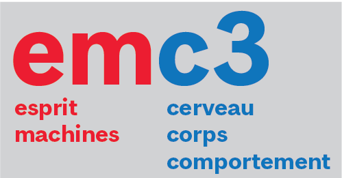

Nous travaillons à l’interface entre la cognition, le cerveau, les machines et le monde extérieur, en utilisant des mesures comportementales (parmi lesquelles l’oculométrie), des mesures physiologiques et des modèles computationnels. Nous travaillons avec des humains, des animaux, ainsi qu’avec des ensembles de données en accès libre. Une grande partie de notre recherche se concentre sur la vision, l’ouïe et les mouvements des yeux, en considérant des aspects sensoriels, attentionnels et cognitifs. Nous gardons un œil attentif sur les applications directes à la technique, aux algorithmes et à la santé humaine.
Plus de détails sur la page Projets.
Actualités
Février 2026 – Nous avons le plaisir d’accueillir @Eva Ozturk, qui nous arrive de Paris et passera quelques mois parmi nous pour travailler sur un projet lié à l’épilepsie.
Décembre 2025 – Alex obtient une bourse de maîtrise Brain-Heart Interconnectome ! 🎉
Décembre 2025 — SciCommons: La première étape de notre progression lente mais régulière vers un portail ouvert de publication et d’évaluation est désormais disponible sous la forme d’un portail de club de lecture scientifique. Excellent travail d’Armaan et de Faisal, s’appuyant sur les travaux antérieurs de Jyothi Swaroop et Dinakar. Les testeurs intrépides sont invités à y créer leurs groupes de discussion.
December 2025 - Le préprint de Jonathan est maintenant sur biorXiv !! 📄
Novembre 2025 - Alex reçoit une bourse de recrutement VSRN ! 🎉
Octobre 2025 – Nouveau preprint publié sur arXiv !! 📄
Septembre 2025 – Beaucoup de mouvement et de nouveaux départs ! Oren et Noa terminent leurs études et passent à de nouveaux projets, Kasia prend un nouveau poste à Cracovie, les étudiants MITACS et GSoC reprennent leurs programmes réguliers, Alex rejoint le laboratoire comme nouveau étudiant à la maîtrise. Félicitations à tous !! 🎉
Août 2025 – Maya reçoit la bourse commémorative Jenny Panitch Beckow. Félicitations !! 🎉
Août 2025 - Yohai obtient une bourse de la Faculté de médecine et des sciences de la santé de McGill. 🎉
Mai 2025 – Maya obtient une bourse de maîtrise de la Fondation Savoy ! Félicitations !! 🎉
Avril 2025 - Nouveau préprint méthodologique sur les enregistrements par microélectrodes dans l’insula humaine, issu de la collaboration en cours avec l’équipe du Dr Dang Nguyen au CHUM. Preprints.org 📄
Avril 2025 – Amanda a terminé sa maîtrise et quittera le laboratoire à la fin du mois. Félicitations pour son excellent mémoire de maîtrise, et en route vers de nouvelles aventures ! 🎉
Avril 2025 - Sabrina a reçu une bourse de recherche de premier cycle du CRSNG pour l’été 2025 afin de poursuivre ses travaux en cours sur la modélisation de la recherche visuelle.
Mars 2025 – Premier article publié par le labo. Le préprint de Yohai, montrant pour la première fois comment le remappage anticipé peut expliquer la mauvaise localisation biphasique péri-saccadique, paraîtra bientôt dans le Journal of Vision après un processus d’évaluation fluide et constructif. Bravo pour ce super travail, Yohai ! 🎉📄
Mars 2025 - Nouvelle prépublication en ligne sur la variabilité des potentiels de champ local, issue d’une belle collaboration avec Mohsen Parto-Dezfouli et le groupe élargi de Pascal Fries. bioRxiv 📄
Janvier/Février 2025 - Maya reçoit une bourse de voyage UNIQUE, une PGSS Travel Award, un VSRN Travel Award et un GREAT Award pour assister à l’atelier/conférence d’enregistrement iEEG MicMac en France en mars. 🎉
Janvier 2025 - Buxin reçoit une bourse d’excellence UNIQUE. Félicitations, Buxin ! 🏆
Octobre 2024 - Nous recevons le prix Agile du CIRMMT pour le développement de notre nouvelle interface musicale sans marqueur, basée sur caméra et à très faible latence. 🎉🎊🥳
Septembre 2024 - Amanda reçoit une GREAT bourse de voyage. Félicitations ! 🏆
Septembre 2024 - Maya reçoit la bourse de perfectionnement du RRSV au niveau maîtrise et Yohai au niveau doctorat. Félicitations à tous les deux ! 🏆
Septembre 2024 - On accueille Maya (Maîtrise) et Buxin (Doctorat) au laboratoire en tant que nouveaux étudiants des cycles supérieurs. 💐
Septembre 2024 - On accueille Evan et Isidore au laboratoire en tant que stagiaires de recherche de premier cycle. Ils seront avec nous pendant un an. 💐
Septembre 2024 - Yohai reçoit la bourse de perfectionnement du RRSV. Félicitations, Yohai ! 🏆
May 2024 - Welcoming Jacky and Alex to the lab as undergraduate research trainees. They will be with us for several months to a year. 💐
Août 2024 - Oren reçoit la bourse commémorative Dr. Steven S. Zalcman du JCF. Félicitations, Oren ! 🏆
Mai 2024 - On accueille Jacky et Alex au laboratoire en tant que stagiaires de recherche de premier cycle. Ils seront avec nous pendant plusieurs mois à un an. 💐
Avril 2024 - Buxin et Haoxiang complètent leur soutenance de master avec brio. Alexandru, Youzhi, Lilia et Romina terminent leurs cours de recherche d’un an. L’équipe de Yohai remporte le troisième prix du hackathon Mistral AI à Paris lors du sommet R.AI.SE.
Mars 2024 - Les équipes respectives d’Oren et Noa reçoivent chacune un CIRMMT Student Award (du montant maximal). Félicitations, Oren et Noa ! 🏆
Mars 2024 - Yohai a été admis et prendra part à l’école d’été du CIFAR dédiée à l’apprentissage profond et à l’apprentissage par renforcement (DLRL). Félicitations Yohai ! 🏆
Mars 2024 - Accueil de Louis au laboratoire en tant que stagiaire en vision par ordinateur et neuro-AI de Telecom Paris (jusqu’en août 2024). 🎉
Février 2024 - Bienvenue à Lilie, Joshua et Pauline, nos nouveaux membres/collaborateurs musicaux. 🎉
Février 2024 - Yohai obtient une bourse de master CAMBAM pour cette année, qui s’ajoute à sa bourse UNIQUE. Félicitations Yohai ! 🏆
Février 2024 - Un accueil chaleureux à Jérôme, notre nouvel, mais expérimenté, Chercheur Associé. 🎉
Janvier 2024 - Amanda reçoit une bourse de BESC ! Félicitations Amanda ! 🏆
Janvier 2024 - Yohaï a terminé avec succès son séminaire de passage direct de la maîtrise au doctorat, et deviendra officiellement doctorant à partir de septembre (après les formalités d’immigration). Félicitations Yohai !
Janvier 2024 - Kasia reçoit une bourse de voyage de l’UNIQUE pour se rendre cet été en Floride à la réunion de la Société des Sciences de la Vision. Félicitations Kasia ! 🏆
Décembre 2023 - Yohai reçoit une bourse d’excellence UNIQUE (Niveau: maîtrise). Félicitations Yohai ! 🏆
Octobre 2023 - Kasia reçoit un des prix de la meilleure affiche à la réunion UNIQUE Neuro-AI à Mont-Tremblant. Félicitations Kasia ! 🏆
Septembre 2023 - Plus de prépublications publiées ! Félicitations Yohai. 📄
Septembre 2023 - Noa reçoit une bourse de recrutement RRSV. Félicitations Noa ! 🏆
Septembre 2023 - Bienvenue à Noa (Masters), Alexandru et Lilia (NSCI 410), Youzhi (PSYC 494), et Romina (COGS 401) au laboratoire 👋
Août 2023 - La première série de prépublications du laboratoire est disponible ! Félicitations, Kasia et Buxin. 📄
Août 2023 - Oren a remporté la bourse commémorative Jenny Panitch Beckow (20 000 CAD) pour son projet concernant l’absorption musicale. Félicitations Oren. 🏆
Juillet 2023 - Yohaï et son équipe ont décroché la victoire au AI Safety Hackathon organisé par Meta AI et Entrepreneur First aux bureaux parisiens de Meta. 🏆
Juin 2023 - Alexandru, Bradley, Yavuz, Lilia et Youzhi rejoignent le laboratoire en tant que stagiaires d’été. Alexandru et Youzhi suivront ensuite les cours NSCI 410 et PSYC 494 respectivement avec nous pendant deux semestres. 👋
Mai 2023 - Kasia reçoit un prix de présentation scientifique et de formation de la part du RRSV. 🏆
Mars 2023 - L’équipe composée d’Anais, d’Amanda, de Yohai et d’Ula a reçu une bourse d’études du CIRMMT pour travailler sur leur projet de performance musicale. 🏆
Janv 2023 - Si vous avez des compétences en programmation, êtes intéressé.e par un stage d’été rémunéré (juin-juillet-août) et êtes relativement nouveau dans le monde du logiciel libre, contactez-nous - nous pourrions avoir 2 projets ou plus disponibles dans le cadre du programme Google Summer of Code.
Janv 2023 - Yohaï-Eliel et Oren reçoivent chacun une bourse de recrutement RRSV. Félicitations à tous les deux ! 🏆
Janv 2023 - Kasia a reçu une bourse d’excellence postdoctorale UNIQUE ! 🏆
Janv 2023 - Yohai et Oren rejoignent le laboratoire en tant que nouveaux étudiants en MSc ; Anais commence son cours de recherche de premier cycle au laboratoire. Bienvenue ! 👋
Nov 2022 - Amanda et Kasia présentent le premier poster du laboratoire lors de la réunion RRSV à Montréal. 🏆
